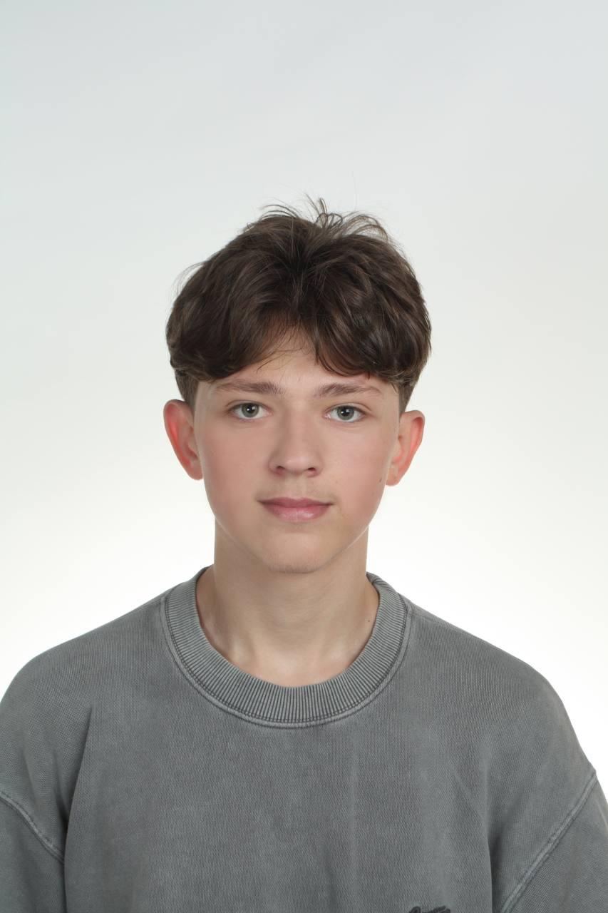

Kelner
Warszawa. Obsługa klientów w dynamicznym środowisku, praca pod presją czasu oraz dbanie o pozytywny wizerunek lokalu.
Nr albumu: 75381
E-mail: omandzi1@stu.vistula.edu.pl
Telefon: +48 578 566 228
Miasto: Warszawa

Mam 17 lat i jestem studentem pierwszego roku informatyki w Warszawie. Interesuję się programowaniem, sprzętem komputerowym i gamingiem. Szybko się uczę i w przyszłości planuję założyć własny biznes w branży IT. Obecnie skupiam się na nauce logiki programowania i tworzeniu własnych projektów.
Warszawa. Obsługa klientów w dynamicznym środowisku, praca pod presją czasu oraz dbanie o pozytywny wizerunek lokalu.
Aktywny udział w akcjach wolontariackich. Pomoc w organizacji wydarzeń, wsparcie logistyczne oraz praca w grupie nad wspólnym celem.
Vistula University (Akademia Finansów i Biznesu Vistula)
Kierunek: Informatyka
Numer albumu: 75381
Rok studiów: 1. rok (2. semestr)